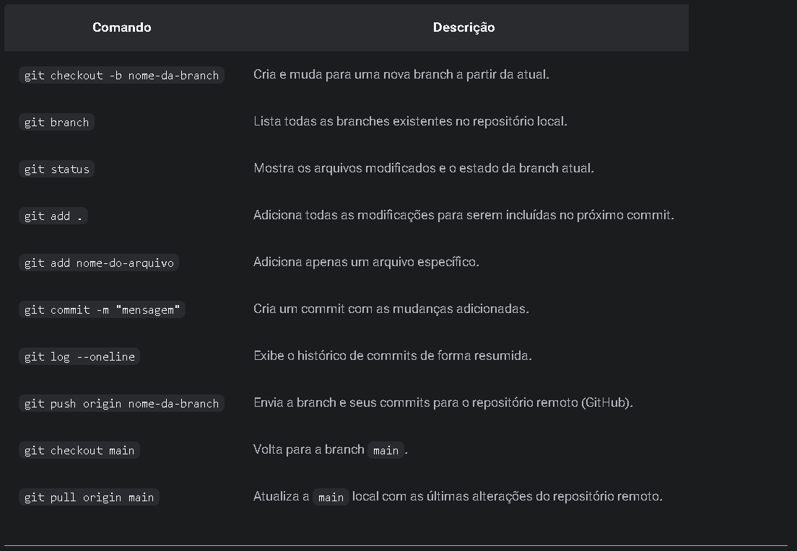

Anotações e links de exemplos do curso da Alura
Links
- Acesse a página de títulos.
-
Acesse a página de parágrafos.
- Aula 02 do curso de HTML e CSS com explicações de uso de parágrafos e tags não semânticas.
-
Acesse a página da imagem.
- Aula 02 do curso de HTML e CSS com explicações de uso de imagens.
-
Acesse a página de listas.
- Aula 02 do curso de HTML e CSS com explicações de uso de listas.
-
Acesse a página da links.
- Aula 02 do curso de HTML e CSS com explicações do uso de links.
-
Acesse a página de HTML semânticos e boas práticas de layout.
- Aula 03 do curso de HTML e CSS com explicações das tags semânticas.
-
Acesse a página do projeto do curso.
- Aula 03 e 04 do curso de HTML e CSS, contendo explicação de criação do primeiro projeto, favicon, boas práticas e CSS.
- Uso da propriedade "style" dentro do elemento HTML (inline). Uso do font-size, color, font-family e letter-spacing (espaçamento enre letras).
- Outra forma é usar a tag style dentro da tag head, como forma de alterar todo o HTML.
- Não é o ideal usar o style dentro do próprio HTML, pois pode deixar o código "bagunçado". Correto, separar o arquivo CSS. Explicação do arquivo CSS em separado (externo).
- Minhas Anotações Curso Alura em PDF
Obs: Algumas explicações estão escritas dentro do código HTML, sempre abrir o código para ler mais do assunto.
Anotações
Configurando o ambiente e criando o primeiro site. Aulas 02, 03 e 04.
IDE - ambiente para escrever os códigos, como o VS Code.
O VS Code possui extensões e uma delas é o português Brasil.
É possível alterar o tamanho da fonte e modificar como salvar automaticamente.
Pode-se configurar para quebrar a linha automaticamente (ou apertar Alt + z, para quebrar manualmente).
Todo navegador tem as Devtools, ferramentas de desenvolvimento, para visualizar os códigos HTML e CSS dos sites. Com essa ferramenta, além de visualizar, é possível interagir e modificar o site. É possível alterar as dimensões para diferentes dispositivos e visualizar o comportamento da página para diferentes dispositivos.
O atalho para gerar a estrutura padrão do HTML é “!”, no VS Code
Para inserir múltiplas tags no VS Code usa-se o asterísco (*), exemplo, p*5, seriam adicionados cinco parágrafos. Para adicionar as tags de parágrafos em um texto já pronto, usa-se o comando "Ctrl+Shift+P", na barra de busca digita-se "Emmet: Wrap with abbreviation", selecionando o texto que deseja inserir as tags de parágrafo, e digita-se "p*", para adicionar um parágrafo para cada linha do texto já feito.
Estrutura padrão:
<!DOCTYPE html><html lang="en"><head><meta charset="UTF-8"><meta name="viewport" content="width=device-width, initial-scale=1.0"><title>Document</title></head><body></body></html>
O HTML é uma linguagem que significa marcação de textos, logo, o uso de “Tags” (etiquetas) são usadas para marcar os textos ou comandos, com a finalidade de dizer ao navegador o que significa cada parte. Para indicar, usa-se tags de abertura e encerramento.
Live server serve para agilizar o desenvolvimento da página, ao gerar um host local do site e atualizá-lo automaticamente no navegador, sem a necessidade de ficar atualizando a página manualmente a cada modificação do código.
Tag semântica e não semântica. A tag semântica é aquela que quer dizer exatamente seu propósito, serve para o navegador identificar exatamente o que o desenvolvedor quis com aquela tag; já a não semântica é uma tag sem propósito específico, embora o navegador entenda, ela não a indica com aquele propósito, para buscadores, por exemplo.
A tag meta é para metadados e é usada apenas para dizer ao navegador informações de configurações de exibição, essas informações não aparecem para o usuário. No caso, o UTF-8 é usado para informar qual o conjunto de caracteres que será usado, como caracteres especiais, para que esses caracteres apareçam corretamente no cavegador, já o viewport é para dizer ao navegador qual o tamanho da tela que será usada por padrão, no caso, foi definido que a largura padrão será a largura do dispositivo, sendo a escala inicial 1, ou seja, sem zoom.
A tag title aparece no título do site, na aba ou no próprio navegador.
Na tag body onde são inseridos todos os conteúdos da página, que serão visíveis ao usuário.
A tag hr significa horizontal row, ou seja, é uma tag sem fechamento para adicionar uma linha de separação no HTML.
Manipulando imagem HTML - o tamanho da imagem é relevante para inclusão no site, até mesmo uma imagem de 1mb pode ser considerada grande. O ideal é sempre diminuir a qualidade e tamanho da imagem para inserir no site para carregamento rápido. Um aplicativo que pode ajudar nessa parte é o GIMP, aplicativo e edição de imagem gratuita. Pode-se usar o site tinypng.com para diminuir o tamanho da imagem também. Para computadores, o tamanho ideal é de até 1900px, para tablets é 720px e celulares, 480px.
Lista ordenada. Usada para inserir uma lista como receita, por exemplo. Usada com a tag “ol” e “li”.
Para adicionar um favicon, usa-se a tag "link". Nela, coloca-se a propriedade "rel" para indicar qual o relacionamento. No caso do favicon, usa-se "icon". E, por fim, indica-se a localização do ícone com "href". Por boa prática de desenvolvimento, o ocrreto é deixar o favicon dentro da pasta raiz (junto com o index). Além disso, deve-se usar a propriedade "type" para indicar o tipo de imagem para o navegador.
Para puxar a folha de estilo, usa-se a tag link, usando o relacionamento com stylesheet e o caminho.
Para adicionar a fonte localmente (baixado do Google), basta pegar o arquivo da fonte e colocar dentro da pasta do projeto (seja na raiz ou em pasta). Neste caso, a forma de "linkar" o arquivo com o projeto é pelo CSS, com o comando @font-face, indicar o nome da fonte e sua url (para sair de uma pasta e voltar para a raiz usa-se ../). Ao indicar o peso da fonte aqui, não é necessário indicar o peso da fonte diretamente no elemento.
O comando font-display: swap é usado para informar ao navegador que se houver atraso no carregamento da fonte, é para usar a segunda opção de fonte e depois voltar para fonte principal, após o carregamento completo.
O margin e padding podem ser incluídos e forma global no CSS, para ser aplicado a todos os elementos. Para isso, usa-se o asterísco. É bom resetar a configuração de todo navegador colocando esse primeiro código no CSS.
O navegador vai entender o comando de cores em nome, hexadecimal e rgb.
Pode-se aplicar a configuração a todos os elementos dentro do body, como a cor das letras, ou pode-se aplicar diretamente em cada elemento, apenas os separando por vírgulas.
A melhor forma e a correta é aplicar classes aos elementos, para facilicar a estilização de cada um deles.
Fontes. serif ou fonte serifada é aquela que possui uma decoração na escrita, como prolongamento dos traços nos cantos da letra. As sans-serif é mais reta s sólida, não possui decorações. Existem outras opções, como monospace, cursive ou fantasy.
Caso o projeto tenha o tamanho de fonte em pt, deve-se converter para px, que é o formato mais usado. No caso, 1 pt representa 1,333 px.
A tag span foi usada apenas para destacar parte do texto, para configurar aquela parte especificamente.
Uma forma boa de aplicar estilo em elementos iguais é usar a hierarquia, no exemplo foi usado o h1 espaço span, para indicar ao navegador que o estilo deve ser aplicado ao span dentro do h1.
Configurações padrão. Todo elemento no HTML tem configurações de visualização (display)padronizadas aplicadas pelos navegadores, alguns elementos possuem configurações de display em "block", que ocupa o espaço máximo de largura disponível na tela (ex: parágrafo), outros elementos possuem configurações de display "inline", que ocupa somente o espaço dele mesmo, se posicionando, quando for possível, ao lado de outros elementos na tela (ex: links <a>, ou imagens).
Após usar o "display: block", o elemento ocupará toda a extensão da largura da tela, se a ideia é diminuir ou limitar esse espaço usado, deve-se usar o comando "width", e informar ao navegador que aquele elemento, embora estja em "block", vai usar somente um espaço limitado da largura, por exemplo, usar valor em px para limitar o espaço da largura (display: block; width: 200px).
Line-height. Essa propriedade no CSS é usada para definir o tamanho (altura) de uma linha. Por padrão, a linha tem a mesma altura da fonte, se a fonte tem 24px, o tamanho ou altura da linha ficará em 24px. Como o texto sempre fica centralizado verticalmente com o tamanho da linha, se definirmos o line-height acima do tamanho da fonte, o texto centralizará automaticamente ao novo tamanho. Essa técnica pode ser usada para centralizar um texto verticalmente dentro de um botão.
Box-model. Todos os elementos ficam dentro da caixa, que é formada pela margem, borda, espaçamento e conteúdo.
Com isso, é possível usar as propriedade de "margin" e "padding" para organizar o elemento onde fica melhor na tela. É possível lançar valores fixos como px ou relatívos como porcentagem. Ao lançar os valores, pode-se lançar individualmente para cada lado (ex: margin: 10px 10px 10px 10px), somente para cima/baixo ou esquerda/direita (ex: 10px 10px), ou para todos os lados ao mesmo tempos (margin: 10px). Uma forma fácil de indicar ao navegador que a margem tem que se adapatar a cada tamanho de tela é o valor "auto". Nesse caso, o navegador automaticamente adicionará ou removerá margem, calculando o tamanho da tela, centralizando o elemento em block na tela (margin: auto).
a {
display: block;
width: 340px;
height: 66px;
text-align: center;
border-radius: 36px;
line-height: 66px;
margin: auto;
}
Sobre ajuste de imagem, pode-se usar a propriedade "max-width: 100%" e "height: auto" para indicar ao navegador que a imagem deverá reajustar de acordo com o tamanho da tela.
section img {
display: block;
margin: 0 auto;
max-width: 100%;
height: auto;
}
A tag "br" serve para quebrar linhas de um parágrafo, é usada para textos pequenos, poemas ou informações de endereço no rodapé, no entanto não é aconselhável usar essa estratégia para telas responsivas, pois o que é codificado no HTML é fixo, e quando se altera o tamanho da tela o texto pode ficar desorganizado. Para isso, o ideal é limitar o tamanho do elemento na tela a depender do próprio espaço disponível.
<h1>Fique de olho<br>
no que importa</h1>Acima, o texto fica quebrado, entretanto se a tela diminuir, pode ser que o texto fique desorganizado, então, o correto é limitar o tamanho do elemento com a propriedade CSS "width".
.container {
width: 300px; ou 50%
}Obs: Ao limitar o tamanho do espaço, é possível que o alinhamento central na tela se perca, caso o texto esteja ao centro da tela com a propriedade "text-align: center", pois o texto estava alinhado ao centro considerando o tamanho total da tela (display: block), após limitar o tamanho do espaço, o texto continua alinhado, mas ao novo tamanho, que ocoupa apenas um lado da tela. Para corrigir isso, usa-se a propriedade "auto" dentro do "margin", para centralizar elementos com "display: block".
.container {
display: block
width: 300px;
margin: 0 auto
}Adapitação em tablets ou smartphones. Para que o site seja adaptado a diferentes tamanhos de telas, usa-se no CSS a propriedade "@media" (chamada de media queries), com o comando do tamanho da tela. O navegador vai entender que se a tela estiver no máximo naquele tamanho informado, executará os comandos informados no media queries.
@media(max-width: 768px) {
body {
background-color: purple;
color: red;
font-size: 24px
}
}Aula 05 Compartilhando Projeto - Git, Github e Terminal (CMD)
Git e Github são aplicativos para guardar o projeto desenvolvido e compartilhar, guardando também a linha do tempo de desenvolvimento. O Git é local, enquanto o Github é na nuvem.
Terminal (cmd). Para abrir o terminal no VS Code, basta selecionar nas opções acima. Alguns comandos:
- pwd - mostra o local da pasta
- ls (mac/linux) ou dir (win) - mostra os arquivos que a pasta selecionada tem
- cd (+nome da pasta) - navegar para outra pasta dentro do diretório
- cd .. - voltar uma pasta
- mkdir - cria uma pasta nova dentro do diretório
- clear - limpa o terminal
Após baixar o aplicativo Git, deve-se conectá-lo ao VS Code, e isso é feito pelo Terminal.
- Configurando o nome de usuário: git config --global user.name "NomeUsuário"
- Configurando e-mail do usuário - git config --global user.email "emailusuário"
- Para verificar se as aplicações forem bem sucedidas: git config --list
- Navegar até a pasta do projeto: cd pastaprojeto
- Dentro da pasta, iniciar o git: git init
- Adicionar os arquivos ao git (pode-se adicionar um por vez ou todos de uma vez): git add .
- Após adicionar os arquivos, pode-se ver o status: git status
- Após realizar uma modificação, deve-se informar o "commit" (comprometimento), ou seja, adicionar ao histórico: git commit -m "informação da alteração"
- Para visualizar o histórico de "commit": git log
- Para visualizar as branches: git branch
É possível usar o próprio VS Code para realizar os "commits" sem a necessidade de usar o terminal, pelo menu à esquerda "controle do código-fonte" (abaixo da lupa). Nele, é possível visualizar arquivos que foram alterados e pedir para dicioná-los a pasta git com os "commits".
O VS Code e Git ainda podem sincronizar com o Github, para isso, deve-se criar o reposiório no Github.
- Criar repositório no Github
- Acessar o terminal do VS Code e inserir o comando: git remote add origin "url do repositório"
- Em seguida criar o "main branch" (se o main branch já tiver sido criado na pasta local, não é necessário essa etapa): git branch -M main
- Com alterações no projeto feitas, só enviar ao Github: git push -u origin main
- Em caso de perda da pasta, usa-se o comando no terminal para baixar o backup: git clone url do repositório
- Caso a alteração tenha sido feita direto no Github, para baixar a atualização, usa-se o comando: git pull
Branches dentro de um repositório: Branches são ramificações dentros do repositório, dentro deste tem a branch "main", principal, que possivelmente está em produção, e para realizar alterações e proteger o código antes de colocar em produção é necessário criar branches.
Descrição da branch:
- Para modificações e novas funcionalidade: feat ou feature/descricao-da-funcionalidade/modificacao
- Para correção de erro/problema: fix ou bugfix/descricao-do-problema
- Para correções urgentes na main: hotfix/descricao-do-problema
Para criar uma branch, no terminal do VS Code pelo Git, digita git branch para listar as branches, depois "git branch" e o nome da brancho (exmeplos acima). Para mudar entre as branches digita "git checkout" e o nome da branch.
Principais Comandos do Git no Terminal
